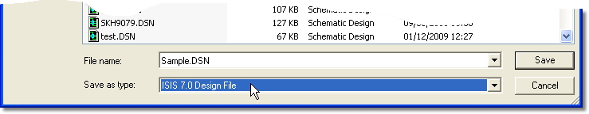

The current release of the software includes feature requests and functionality which necessitate a change to the filing structure of the layout. Older versions of the software cannot therefore load files that have been saved in this version.
An example of this type of feature driven change is the introduction of off-schematic power rail configuration. Loading a schematic from a new version (containing this feature) into an older version (without this feature) could result in radically different connectivity when the file has been loaded..
If you absolutely need to save changes for loading into an older version you can use the 'Save As V7.0' filter on the Save As dialogue form. However, you must understand that while such files will load in older versions we will in no way guarantee the integrity of the design.

In particular, if your layout makes use of features which either did not exist or were implemented differently in Version 7.0 then the design may well be different when loaded into an older version of the software.
Labcenter do not recommend this process for production projects. Responsibility for design integrity lies entirely with the engineer.
Due to the impossibility of maintaining full backward compatibility with older versions of the software, Labcenter does not recommend the design of projects across multiple versions.